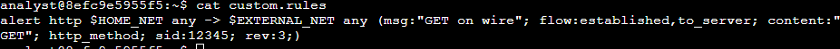
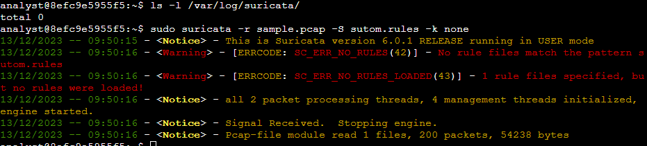
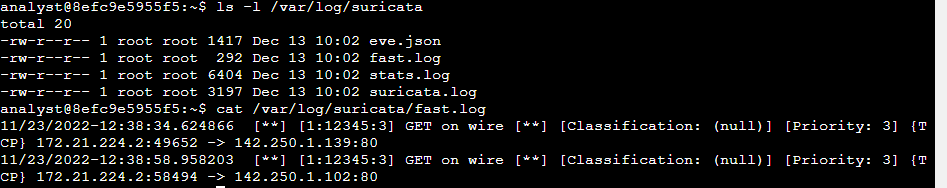
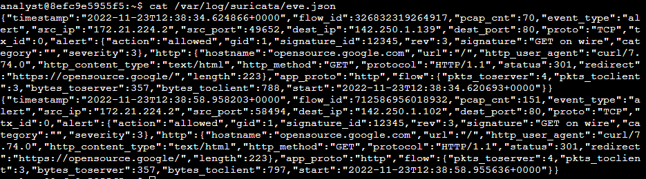
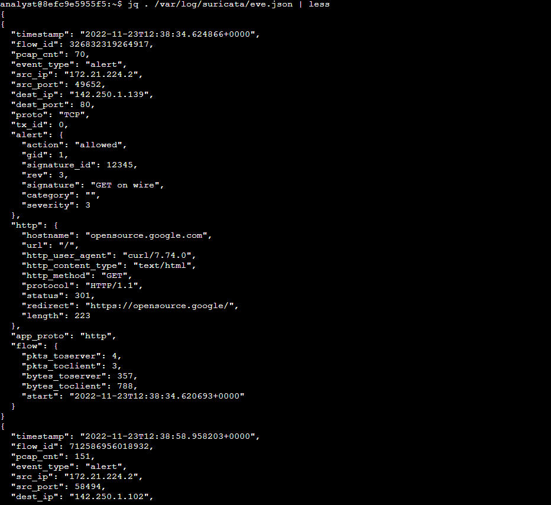
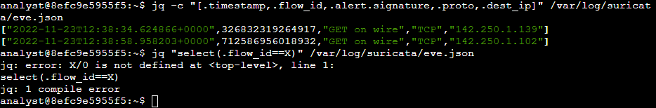

Examine alerts, logs, and rules with Suricata
Scenario
In this scenario, you’re a security analyst who must monitor traffic on your employer's network. You’ll be required to configure Suricata and use it to trigger alerts.
Here’s how you'll do this task: First, you'll
explore custom rules in Suricata. Secondyou'll run Suricata with a custom rule in order to trigger it, and examine the output logs in the fast.log file.
Finally, you’ll examine the additional output that Suricata generates in the standard eve.json log file.
For the purposes of the tests you’ll run in this lab activity, you’ve been supplied with a sample.pcap file
and a custom.rules file. These reside in your home folder.
Let’s define the files you’ll be working with in this lab activity:
1⦁ The sample.pcap file is a packet capture file that contains an example of network traffic data,
which you’ll use to test the Suricata rules. This will allow you to simulate and repeat the exercise of monitoring network traffic.
2⦁ The custom.rules file contains a custom rule when the lab activity starts. You’ll add rules
to this file and run them against the network traffic data in the sample.pcap file.
3⦁ The fast.log file will contain the alerts that Suricata generates. The fast.log file is empty when the lab starts. Each time you test a rule,
or set of rules, against the sample network traffic data, Suricata adds a new alert line to the fast.log file when all the conditions in any of the rules are met. The fast.log file can be located in the /var/log/suricata directory
after Suricata runs.The fast.log file is considered to be a depreciated format and is not recommended for incident response or threat hunting tasks but can be used to perform quick checks or tasks related to quality assurance.
4⦁ The eve.json file is the main, standard, and default log for events generated by Suricata. It contains detailed information about alerts triggered, as well as other network telemetry events, in JSON format. The eve.json file is
generated when Suricate runs, and can also be located in the /var/log/suricata directory. When you create a new rule, you'll need to test the rule to confirm whether or not it worked as expected. You can use the fast.log file to quickly
compare the number of alerts generated each time you run Suricata to test a signature against the sample.pcap file.
Task 1. Examine a custom rule in Suricata
The /home/analyst directory contains a custom.rules file that defines the network traffic rules, which Suricata captures.
I used cat custom.rules to explore the composition
of the Suricata rule defined in the custom.rules file.

Actions differ across network intrusion detection system (NIDS) rule languages, but some common actions are alert, drop, pass, and reject.
Using our example, the file contains a single
alert as the action. The alert keyword instructs to alert on selected network traffic. The IDS will inspect the traffic packets and send out an alert in case it matches.
1⦁ alert http: : Indicates that this is an HTTP-related alert.
2⦁ $HOME_NET any -> $EXTERNAL_NET any: Specifies the flow direction. In this case, it's from any src IP $HOME_NET on any port to dst IP $EXTERNAL_NET on any port.
3⦁ msg:"GET on wire": Provides a human-readable message associated with the alert.
4⦁ The flow:established ,to_server option determines that packets from the client to the server should be matched.
(In this instance, a server is defined as the device responding to the initial SYN packet with a SYN-ACK packet.)
5⦁ content:"GET"": This is the content match condition. It looks for the presence of "GET" in the payload, indicating an HTTP GET request.
6⦁ http_method: Indicates that the content match is specifically looking for an HTTP method.
7⦁ sid:12345: Represents the unique identifier for this signature. In this case, it's assigned the ID 12345
8⦁ rev:3: Indicates the revision number of this signature.
Task 2. Trigger a custom rule in Suricata

Note that before i ran Suricata, there were no files in the /var/log/suricata directory.
This command starts the Suricata application and processes the sample.pcap file using the rules
in the custom.rules file. It returns an output stating how many packets were processed by Suricata.
⦁ The -r sample.pcap option specifies an input file to mimic network traffic. In this case, the sample.pcap file.
⦁ The -S
custom.rules option instructs Suricata to use the rules defined in the custom.rules file.
⦁ The -k none option instructs Suricata to disable all checksum checks.

Note that after running Suricata, there are now four files in the /var/log/suricata directory, including the fast.log and eve.json files.
Each line or entry in the fast.log file corresponds
to an alert generated by Suricata when it processes a packet that meets the conditions of an alert generating rule. Each alert line includes the message that identifies the rule that triggered the alert, as well as the source, destination,
and direction of the traffic.
Task 3. Examine eve.json output

The output returns the raw content of the file.

